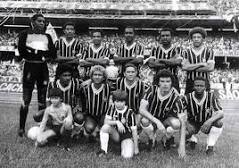

O Sport Club Corinthians Paulista foi fundado em 1° de Setembro de 1910, na cidade de São Paulo. O clube foi criado por um grupo de operários de fábrica de tecidos, no bairro do Bom Retiro. Embora tenha atuado em outras modalidades esportivas ao longo dos anos, seu reconhecimento e suas principais conquistas foram alcançados no futebol, o clube é um dos mais bem sucedidos do Brasil e das Américas nos últimos anos.
